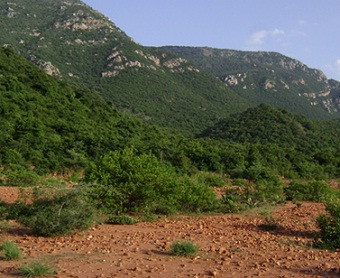
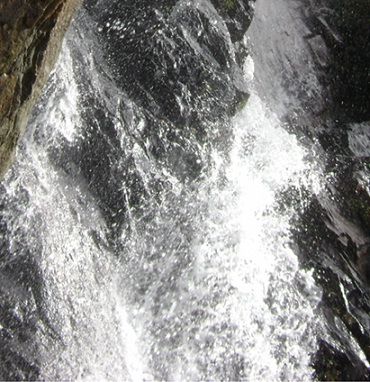
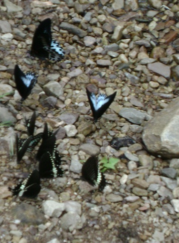

| Nagalapuram - The Trekkers Paradise | |
| Nagalapuram is situated in the Andhra Border.. It is a reserve forest in the venkateshwara range. This is a very special location and is revered by trekkers as “Gods own paradise”. This the only place where is water throughout the year. It is the most beautiful and serene location with waterfalls and crystal clear pools. Anyone who has visited this heaven on earth will vouch for it. It has a variety of flora and fauna as the change of climate happens. The summers are pretty hot as its surrounded by mountains. The months of March to July being the hottest, but still you can cool yourself in the numerous water cashes along the trekking trail. |
 |
 |
The first water crossing is at the temple pool which we will reach in about 45 mts this is where the villagers congregate to celebrate Maha Shivarathiri at NAGALLAMMA the forest goddess temple located in a cave here. We generally take a dip here at the small pool and move on after taking the blessings of NAGALLAMMA.The other time of the year this serene forest it undisturbed except by trekkers who venture on weekends and some villagers who go for cutting wood and collecting other herbs. The first pool as we call it is about another 30mts trek. This pool is small and also has a lot of roots beneath. We generally take pictures spend some time in the process and move on to the Romantic Pool. While we trek up wards to the romantic pool we have some climbing to do which people enjoy and liked to be photographed doing it to show their friends. Then we proceed to the Romantic Pool.. |
| This is the most beautiful and pictures’ pool with a wonderful reverse Y formation. Some people also call it the Yoo pool. This pool is crystal clear and is pretty wide with some shallow area for non swimmers and a deep side near the water fall for swimmers. No one wants to get out of this place very quickly so we generally spend about 30-45mts at this place. The third pool is about another 30mts walk. We have a steep climb and we go to a point from where we can see a beautiful valley. A lovely place to take snaps. And then we have a decent. Then after a few crossings we have another climb and we reach the third pool. This is like a second home for many trekkers as we pitch camp and rest here at night. It’s a small camping place fit to accommodate about 15 people. Just 10meters away is the Jacuzzi Pool where we tie a sheet on top and chill-out in the hot summer afternoons. Just above this pool is the 3rd Pool. This is the biggest and the deepest pool we have ever seen in this range. It’s about 30 feet deep so only swimmers permitted here and non swimmers are provided proper life jackets and also two three swimmers are on the standby on the shore having a watch over them in case of emergency as we follow this in the second pool as well. Beyond this place we advice people to exercise at most caution as it involves a little bit of climbing and have to be careful. |
 |
| The climate is hot most of the year except you get some relief during the period from August to January. November and December is the coolest and the nights are literally chill with temperatures dropping to 17 – 20 degrees. It’s the best time to be there if you have proper gear like sleeping bags and a small tent if possible. I have personally been to this place about a hundred times but have never lost the craving for it. It’s a diving feeling of calmness and the sound of flowing water that make you feel complete with a sense of satisfaction and fullness. The nights are really calm with sound of crickets and a total darkness. Even though people fear the darkness here they feet its nice and different. That’s Nagala. "God’s Own Paradise". |
|